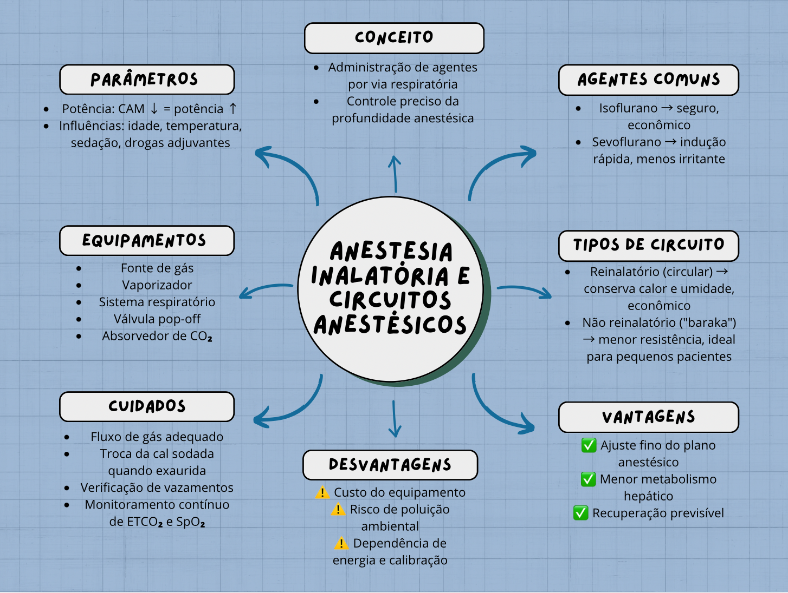
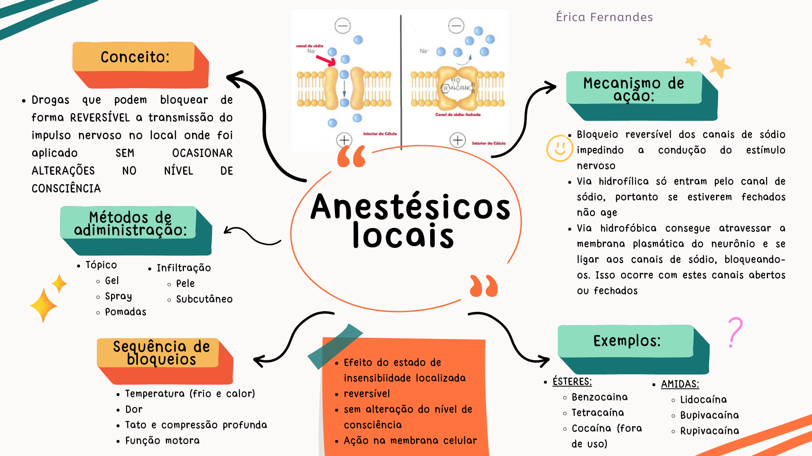

Mapas mentais
Revisões rápidas e visuais dos temas mais cobrados.
Mapas disponíveis

Mapa mental 1
Anestesia inalatória e circuitos anestésicos
Anestesia inalatória: técnica que utiliza gases ou vapores anestésicos administrados pela respiração para induzir e manter a anestesia. Circuitos anestésicos: sistemas que conduzem oxigênio e anestésicos ao paciente e eliminam o CO₂, permitindo uma ventilação segura durante a cirurgia.
Abrir em tamanho grande
Mapa mental 2
Anestésicos locais
Anestésicos locais: são medicamentos que bloqueiam temporariamente a condução dos impulsos nervosos, causando perda da sensibilidade sem alterar a consciência.
Abrir em tamanho grande